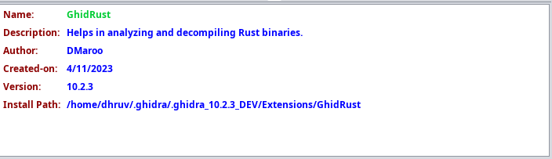
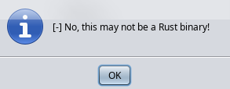
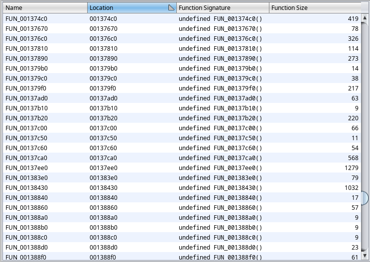
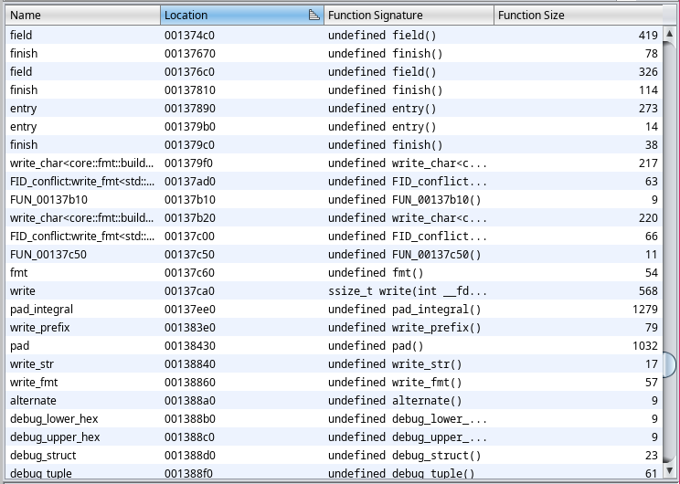
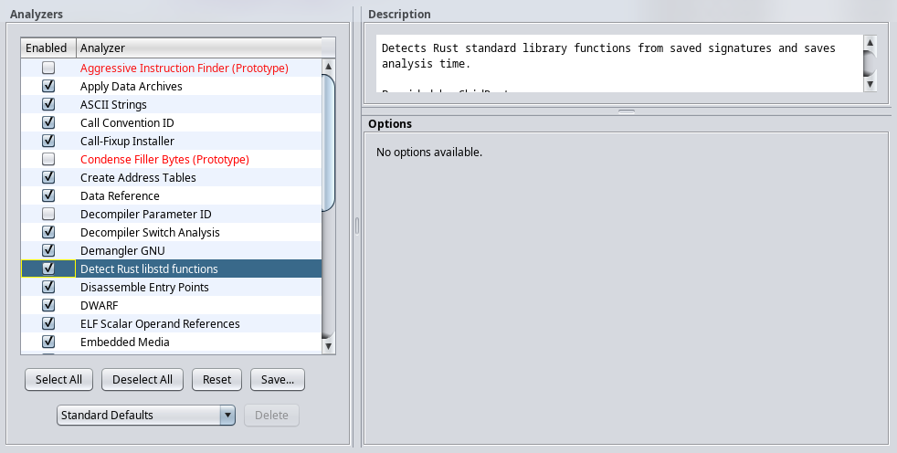

Status: Currently, the plugin is under extensive development. It is far from maturity. But a working prototype can be expected within a few weeks.

The plugin can detect Rust binaries. To use the feature, click on
GhidRust -> Check if Rust binary. It will show a popup
indicating whether it's a Rust binary or not.
| May not be a Rust binary | May be a Rust binary |
|---|---|
|  |  |
The plugin also consists of RustStdAnalyzer which
analyzes Rust binaries and applies function signatures to the library
functions (Rust's std) found in the binary. This is done
using .fidb function ID database. A default database for
x86-64 and Rust version 1.58.1 has been provided.
This is useful when analyzing stripped Rust binaries.
| Without Function ID | With Function ID |
|---|---|
|  |  |
The analyzer is enabled by default for Rust binaries, and it's name in analyzer window is "Detect Rust libstd functions".

This is a work-in-progress feature as of now. It requires parsing the decompiled C code and then emitting the corresponding Rust code. Once that is done, Rust macro support will also be added in the future.
The decompiler panel can be accessed by clicking
GhidRust -> Open decompiler. It looks as follows.

There is a build script provided (build.sh) which can
build and install the extension.
$ ./build.sh -h
GhidRust install script
Usage: build.sh [-i | --install] -g GHIDRA_PATH
-i | --install Install the extension
-g | --ghidra Path to Ghidra installation (usually /opt/ghidra)
-h | --help Show usage/helpYou can build the extension using the following command.
$ ./build.sh -g <GHIDRA_INSTALL_DIR>You can install it using the install flag as follows.
./build.sh -ig <GHIDRA_INSTALL_DIR>To add it to Ghidra, just click on
File -> Install Extensions... and choose GhidRust there.
Once installed, you will have a GhidRust entry in the
Ghidra toolbar which can be used to invoke the plugin.
You might need to activate it from the
File -> Configure... menu. Choose the
Miscellaneous section, and click the checkbox beside
RustDecPlugin.